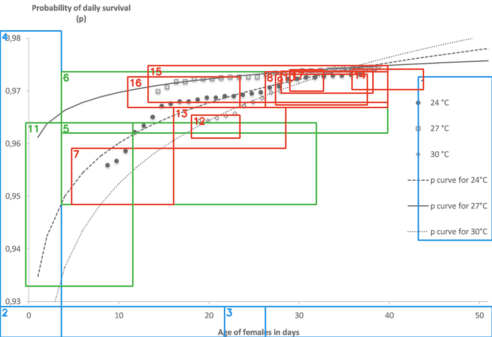
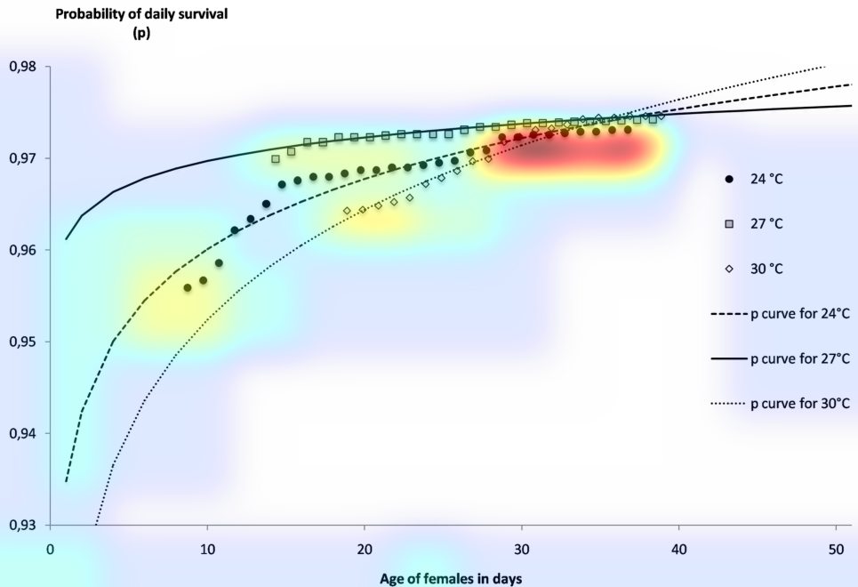
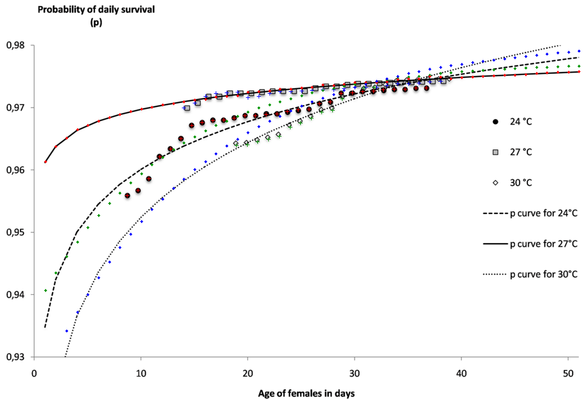
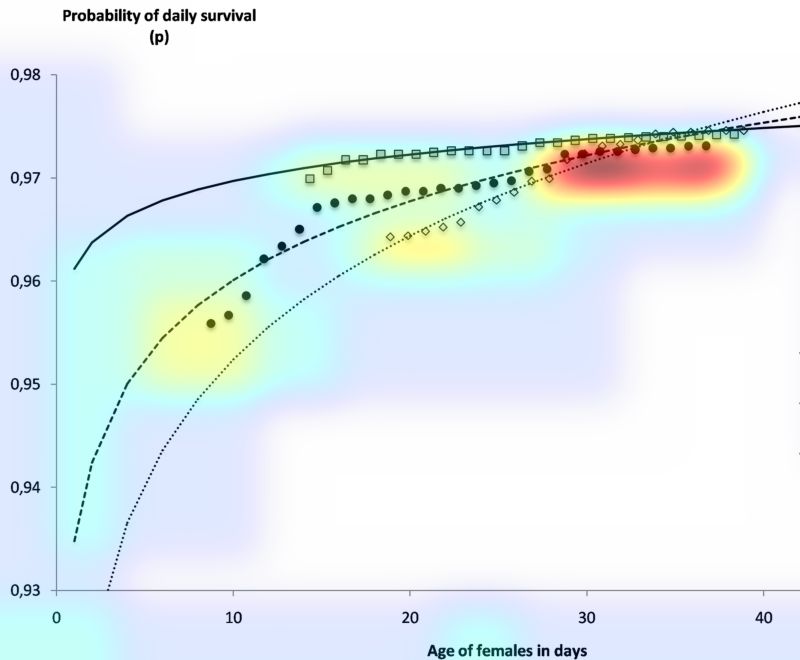
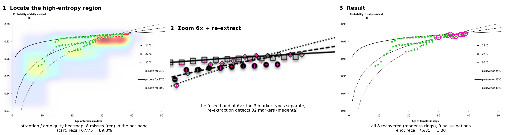
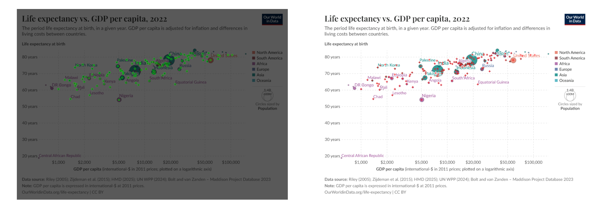
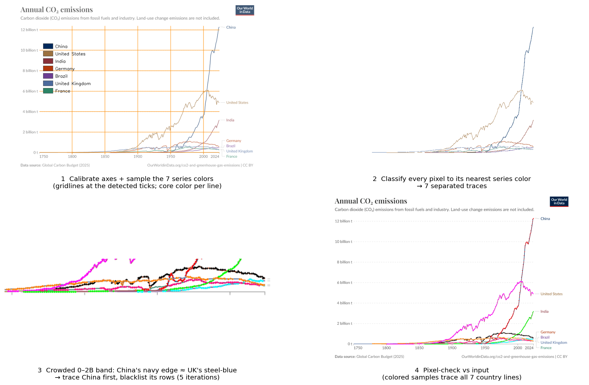

Extracting sources into a persistent, durable and queryable llm-wiki
Chris Sweet
Charles Vardeman
Priscila Moreira
James Sweet
August 20, 2026
What an llm-wiki is
The setup, and the alternative
LLMs are trained on a vast array of human knowledge. But science is a broad landscape, each domain its own deep dive; incorporating all of it into a model is challenging.
The training data is stale by design. Recent advances are simply not in it.
Harnesses now add “project data”, files you upload as the basis for a project. Useful, but it is a RAG approach: nothing persists, and the context is re-extracted from scratch on every question.
llm-wiki, proposed by Andrej Karpathy, is the alternative: dense, connected wiki pages as a persistent memory, authored and maintained by the LLM itself.
Visible and queryable by the human, so the memory stays trusted and auditable, not a black box.
A persistent, compounding memory the LLM writes and the human can read, not retrieval re-run on every question.
Does the memory actually work?
A first controlled measurement, on a real research project
Forty questions on one real project. Reading the llm-wiki answered 90% correctly and fabricated nothing, roughly double RAG’s 42% (10 fabrications); the model with no context scored 2%.
Approach
Correct
Overall (0-3)
Fabricated
Model alone, no context
2%
0.10
2
Plain RAG over the sources
42%
1.32
10
llm-wiki read path
90%
2.65
0
90%
correct, versus 42% for RAG. Roughly double.
0
fabricated, versus 10 for RAG.
The zero is by design, a layered control stack that keeps every claim honest:
1 · Honest-reporting rulesreal outputs only; tag every number’s corpus; file failures truthfully
2 · Verification gateblocks unsupported claims and untagged numbers before a commit
3 · Discipline gatesname the always-wrong shortcuts so the agent self-catches
4 · Blocking hooksfire the checks and can halt a bad write, exit-code enforced
Gates and hooks need an agentic harness that can run them, which is why we build in Claude Code and Codex, not the Claude or ChatGPT chat apps. Plain Markdown keeps every claim auditable.
llm-wiki operational architecture
How the agent writes, reads, and greps its memory, reconstructed from real transcripts
Reconstructed from real transcripts, this is the YARP wiki as the agent actually used it. It works in three channels: it writes pages (red arrows: authoring, editing, committing), it reads a page into context (blue arrows), and it greps to check its own work (green self-loops).
The mix is lopsided. By tool call it is 88% writes, 7% reads, 6% greps. Reads are rare because of caching: once a page is loaded it stays in the context window, so the agent reuses it instead of re-reading. Its moves go into building and maintaining the memory, not re-fetching it.
Everything routes through two hubs, log (touched 58 times) and index (45). The agent rarely walks the typed edges it wrote: only 24 of 136 moves follow an authored frontmatter link (solid). The rest, the dashed edges, are links it discovers dynamically by search, not ones it was handed.
The LLM builds the memory and reads it back, hub-organized.
The full YARP wiki, 40 pages. Red = write, blue = read, green = grep or re-read; dark = index/log hubs; dashed = link found by search.
Ingestion: fan out, then synthesize
The write path: one paper per agent, one synthesizer above
Ingesting a paper does not file the PDF. Each PDF is read natively by page range, so tables and figures come through, then the wiki keeps the extracted, attributed knowledge and the links plus a provenance pointer (the DOI and the local path). The source itself stays external.
8 papersPDFs, external
↓
8 subagents · parallel, ~60s1 PDF → structured data never writes the wiki
↓
1 orchestratorsees all 8 at once
↓
wiki pageshub + typed edges
The extraction contract, the same 7 sections for every paper:
Citation, confirmed or corrected against a pre-seeded reference
Contribution, in one sentence
Method, the specific techniques named
Results, exact numbers only, each attributed
Code-relevance, mapped to specific modules and files
Key terms, anchored to where they appear (Table 1, Section 2.2)
Quotes, one or two verbatim, with location
One paper per agent: bounded context, no cross-contamination. Each subagent returns data; the wiki’s structure is decided one level up.
Worked example: tables and figures
A table and a figure, captured straight off the rendered page
Network seeded at Ga-ethyl (node 0); all reactions with ΔG‡ < 80 kcal/mol are presented in Fig. 2.
First-step from Ga-ethyl + ethylene: Ga-n-butyl 44.1, Ga-vinyl 59.8, Ga-hydride 93.5 kcal/mol (excluded, high barrier). Second-step: 53.2, 51.4, 61.3, 36.0.
Reading the rendered page, not its stripped text, is what captured the table’s exact schema and the figure’s network as attributed data. Tables or figures were read and cited in 6 of the 8 papers.
Worked example: graphs
Given only a chart, Claude Code writes its own OpenCV pipeline to digitize it
No recipe is handed to it. The agent writes code to calibrate off the axis ticks, detect every point and curve, zoom in on the ambiguous spots, and then redraw its data back on the source to check it.

1. Writes OpenCV targets. Calibrate off the axes (blue), survey the points and curves (green), zoom on ambiguity (red).

2. Where it zoomed. Effort concentrates on the day 28 to 40 band where the markers and curves fuse, not evenly.

3. Pixel-check. Redraws its extracted points and curves on the source to verify against the pixels.
The model writes and runs its own extractor, then verifies it against the image. F1 0.93 on this chart, the hardest in the set, and 0.94 on average across a 28-chart corpus, beating a hand-written recipe.
Behavioral salience: formal interpretation
The heatmap you just saw is behavioral salience: where the model spent its effort
The heatmap looks like a chart-extraction detail, but it is vital to AI development, far beyond the analysis we showed.
The problem. Prompt engineering cannot, on its own, separate instructed behavior from the model’s implicit behavior. That one blind spot produces both failure modes: tuning that does not converge while you build the system (fix one case, regress another, whack-a-mole), and silent brittleness once deployed, where any model change, even a routine same-vendor update you did not choose, removes behavior the prompt was quietly relying on.
Behavioral salience is the differential that separates them, and the field is converging on this trace-based read. The next four slides build it, ground-truth-free:
What a transcript is: the raw work-log every read is performed on.
Disposition (policy): surface the agent’s implicit model of the task, then intervene on it.
Reducible entropy (artifact): flag where the model worked hardest, then resolve it without ground truth.
Three levels: the same read as a reference you can control, not whack-a-mole.

Behavioral salience: what a transcript is
Claude Code’s own raw work-log: one chart extraction is 281 lines, 4.2 MB
Raw — one line of agent-a8a14075….jsonl
{ "agentId":"a8a14075…", "isSidechain":true,
"message":{ "model":"claude-opus-4-8", "role":"assistant",
"content":[{ "type":"text", "text":
"The frame isn't a heavy box. Let me zoom into the axis
regions to find ticks and the exact axis lines." }] },
"timestamp":"2026-08…", "cwd":"…", "gitBranch":"cv-oracle-recall" }
↓decode
Decoded — the agent's reason → act → observe loop
281 lines · 52 scripts · 21 zoom crops · 4.2 MB
THINKthe frame isn't a heavy box — zoom into the axis regions to find the ticks.
ACTpython3 … crop the bottom-left corner → crop_xaxis_left.png
LOOKopens crop_xaxis_left.png — reads the pixels back in.
THINK…and repeats: 52 scripts, 21 zoom crops, ending on the fused day 30–40 band it flags as partly unrecoverable.
THINKthree marker shapes — black circles, gray squares, open diamonds.
ACTsample the fills; check scipy is available
LOOKcircles ~30–70 dark, squares ~190–218 gray.
THINKcircles touch the dashed curve; naive detection merges them.
ACTbuild a disk matched-filter
LOOK29 circles, days 9–37; one legend dot dropped.
THINKsquares sit ON the solid curve; the centroid is pulled.
ACTtake the topmost gray-fill run per column
LOOK25 squares, days 14–38; 4 gap days interpolated.
THINKdiamonds are open; hole-fill leaks to background.
ACTtemplate-match the diamond glyph
LOOK10 clean diamonds, days 19–28.
THINKat convergence the three shapes fuse.
ACTerosion + distance-transform peak finding
LOOKday-30 diamond hidden behind a circle — omit.
THINKthe fit curves vanish in the marker cloud.
ACT3-track column tracer, mask the marker regions
LOOKsolid curve clean; dashed/dotted lost day 22–37.
THINKfill the curve gaps without inventing points.
ACTfit p = Pinf − A·exp(−k·day)
LOOKrms ~0.001; threads both clean segments.
THINKverify nothing is fabricated.
ACToverlay every mark on the source image
LOOKcrosses centered; day 33–36 hits are bright gaps — dropped.
code.pyClaude Code wrote this
The transcript is where the model reasons, writes code, and looks: the record we mine for behavioral salience. Click the </> on any ACT to see the code it wrote.
Behavioral salience: disposition
Same papers, same template: what changes the memory is the agent’s model of the task
Twelve papers, one template, one schema, the same questions. Only the driving assistant changed, and Claude and Codex built different memories, because they hold different dispositions: implicit models of what the ingestion job is.
Codex’s stance
Build a shallow taxonomy; specifics are subordinate, raw numbers get dropped. 44 pages, no results page. Loss scales with particularity.
Claude’s stance
Preserve the paper’s particulars as first-class, retrievable nodes, because that is what future questions turn on. 78 pages; it invents the results page nobody mandated.
The result: one purpose-level paragraph, no fact or rule named, fixed symptoms nobody listed. Codex build, Claude querier held constant, 13 to 20 / 24, p = 0.0156.
“Treat the wiki as durable, queryable memory, not a summary. Your work succeeds only if a future agent, reading only these pages, can recover this paper’s specific claims, the exact quantities (with units), the named systems and methods, and the conditions, and see how they connect to other papers. Preserve those particulars as first-class, retrievable structure.”
Behavioral salience: reducible entropy
The same behavioral read, now on a single figure: the loop reduces the uncertainty it can, ground-truth-free

Locate the high-entropy band from the transcript, zoom 6x and re-extract, recover all 8 misses with zero hallucinations. 89% to 100%, +8 points.
Entropy
Example
Zoom + re-extract
Reducible, epistemic
el-94 fused grayscale markers
resolves, 8/8 recovered
Irreducible, aleatoric
dots under an opaque bubble
cannot, ~37% floor
The method acts on the top row and stops on the bottom; the 100% versus 37% contrast is the evidence it tells them apart.
Two kinds of “where to look.” Gradient saliency finds where the target is; behavioral salience reads the model’s own effort trace, where it was uncertain and worked hardest. No target required.
The objective is entropy reduction, not answer matching, so ground truth never enters the decision of where to act. The loop is GT-free by construction.
The loop: flag high entropy from the transcript, attempt reduction by zoom and re-extract, and loop.
Behavioral salience: three levels
Every row is one loop: read the trace, localize the cause, intervene, verify without ground truth
level
reads the trace
intervenes
verifies without ground truth
result
Policy
disposition
the agent's model of the task, which particulars it drops
one purpose paragraph, no rule named
transfer test: fixes symptoms nobody named
13 → 20 / 24
p = 0.0156
Artifact
entropy
local effort, the high-uncertainty region
zoom and re-extract
pixel-check or consensus: did entropy drop
89% → 100%
8/8, 0 halluc.
Statistical
Bayesian
the loop's variance across reruns
decide runs-to-confidence
a posterior over the effect
runs →
confidence
A patch fixes only what you named; a disposition change or an entropy reduction fixes the whole class and transfers. Ground truth is the reference you cannot have at scale, so behavioral salience is the reference: controllable, not whack-a-mole.
Synthesis: where linking and trust happen
The layer that sees every paper at once
Reads the existing wiki first (the schema, then the index), then wires each new page into what is already there: typed lineage edges (extends:) with reciprocal back-references.
Numbers and citations: exact, attributed, verified not transcribed; “not stated” when unclear.
Reads and extracts from the real code: for a paper that is a module, it opens the .py and maps each concept to its function.
Flags degraded sources: it caught an abstract-only PDF and surfaced it.
The payoff: cross-paper insight that no single page shows.
It caught a degraded sourceThe "YARP v2.0" PDF was a single-page abstract. The agent noticed, ran pdfinfo and pdftotext to confirm, and opened its extraction with a HONEST FLAG. The page still carries the caveat.
It checked itself against the codeindicator.py computes the six Table 1 features; select_pairs.py runs the ML tournament. Each concept mapped to a function, verified against the real files.
The subagents extract attributed data; the structure, lineage, and cross-paper insight belong to the synthesizer, for example an sklearn 1.3.0 pickle that explains why the cluster environment is pinned.
YARP: many kinds of source
Not just papers: synthesis across source types, one the agent built itself
The YARP memory was not built from papers alone. Four kinds of source fed one wiki, and the agent generated one of them itself.
8 published papers (DOIs), each filed as a source-summary page.
Tutorials, the group’s onboarding guides.
The code itself: concepts pulled straight from the .py (for example Lewis-Structure-Score, sourced from yarpecule/lewis/bem_score.py).
Sphinx API docs the agent built from the code, then ingested as another source.
8 papersDOIs
tutorialsonboarding
the code.py source
Sphinx docsagent-built
↓
one YARP wiki~40 pages, 9 source-summaries, 5 synthesis
The agent generated a source, the API docs, from the code and then ingested it. The code is a first-class source, not just the papers.
YARP: the answer that lives in the links
Combining data: a question no single source can answer
Why is our cluster pinned to scikit-learn 1.3.0? No paper says it. No code comment says it. The answer exists only in the links between the sources.
Conformational Sampling 2022 · paper
is implemented as ↓
reaction/conf_sampling/ · code
ships its model as ↓
a scikit-learn 1.3.0 pickle
forces ↓
CRC environment pinned to 1.3.0
The memory follows paper to code to artifact to operations, a chain assembled from four different source pages.
Dense RAG over the raw repo and the PDFs cannot produce this: the fact lives in the connections, not in any one document.
Not “the AI knows your field.” The group’s hard-won knowledge, paper to code to operations, now instant instead of tribal.
Two kinds of synthesis
What synthesis is, and a real task that shows it
Synthesis is reaching a conclusion that no single source states, by joining new information against what the memory already holds. It takes two forms:
Retrieval synthesis (the sklearn pin you just saw): the conclusion already existed, latent in the links; the agent traverses the memory to surface it. Read-side.
Investigative synthesis (this one): the conclusion existed nowhere. The agent runs the experiments, reconciles the results against the literature and the wiki, and writes the new conclusions back. Write-side.
The task, honestly. Ericka, the YARP dev lead, handed the harness a small but real job to evaluate it: a pre-release 3.0.1 batch for a Monday release, a “KHP fruitfly” case failing and breaking the progress pipeline, no reference outcomes yet. Run it on the current code, check out the stable v3.0.0 tag, and triage.
A successful outcome, in one session: a correct, non-obvious verdict. The release is exonerated (the same failures reproduce on stable v3.0.0), 15 of 22 “failures” are the pipeline working by design, and the real to-do list is 7 issues with the exact one-line fix location. Without the memory, each would have been a cold rediscovery or a wrong guess.
Synthesis is a set of joins
Each conclusion is one synthesis: a new observation, joined to memory the wiki already held
Observation from the runPrior memory it joined againstConclusion (the synthesis)
yarp-progress stuck 15+ minutes in D state, 322,576 tiny files in scratch.
The crc skill and the ingested CRC-Infrastructure page (VAST flash is NFS-backed), plus Lessons-Learned and M5, which had root-caused a scratch re-walk stall.
The known stall, reproduced at 36-reaction scale, hitting even VAST because it is NFS-backed. Not slow disk, not a bad setup: GSM writing an explosion of tiny files. Killing 4 runaway jobs dropped scratch to 23,756, confirming it.
15 of 36 reactions in the failure bucket at ll_refine.irc_validation.
The Phase2-Project1-Pilot page: unintended reactions are retained by design in failed_rxns.pkl, correct routing, not a crash.
Read outcome_label: 15 of 22 "failures" are the by-design IRC quality filter working, not bugs. The genuine error budget is only 7 of 36.
13 to 14 intended reactions at the xTB level.
The ingested Zhao-Savoie-2021 paper and SI: SI Table 6 references 16, and 16 is the post-DFT survivor count.
13 to 14 at xTB is expected below 16, not a shortfall. Some xTB-unintended reactions likely recover at DFT.
CREST crashes are hash-identical on 3.0.1 and stable v3.0.0 (Arm A's 6 are a strict subset of Arm B's 7).
The swap-the-package trick from Lessons-Learned (pip install -e . --no-deps) made running both versions a seconds-long op, not a 15-minute env clone.
The crashes are version-independent and pre-existing: the 3.0.1 PRs are not the culprit. PR #44's one real effect is narrow (C=COCOO fails in both; it only moved where it dies).
Fast and correct not because the model was clever in the moment, but because the memory already held the yardstick, the by-design behavior, and how the cluster fails. Ingestion is what put them there.
Where this lands
Takeaway
Extraction into durable memory, not a one-shot data pull. The wiki compounds: every source ingested and every answer filed means the next question starts from what is already known.
It works, and it stays honest. On a real project the wiki read path answered 90% correctly and fabricated nothing, roughly double plain RAG, and the zero is by design: honest-reporting rules, a verification gate, and blocking hooks in an agentic harness.
Hub-indexed reading, disciplined ingestion. The agent reads through the index and log hubs, and ingests papers, tables, figures, even charts it digitizes with its own code, and heterogeneous sources including ones it wrote itself.
The payoff is the links. Answers that live in no single document, paper to code to operations, become instant instead of tribal.
Not “the AI knows your field.” A persistent, auditable memory the group builds once and keeps, so hard-won knowledge compounds instead of scattering.
Questions
Thank you
Research memory that compounds. Extraction into a durable, queryable llm-wiki: it beat plain RAG and fabricated nothing, it ingests and synthesizes across sources, and the payoff is the answers that live in the links.
Chris Sweet, Charles Vardeman, Priscila Moreira, James Sweet
Also handled: dense bubble scatter
Appendix · Life expectancy vs GDP, OWID. The generated OpenCV pipeline, stage by stage

Density correlation 0.94, and 132 of 165 markers. Erosion removes the country-label text and a distance transform splits touching bubbles, so every detected center lands on a bubble, not a label.
Also handled: multi-series time-series lines
Appendix · Annual CO2 emissions, OWID. Seven same-family colors, separated stage by stage

Calibrate the axes and sample each line’s color, classify every pixel to its nearest series, resolve the near-identical China and UK colors, then pixel-check. All 7 lines traced and overlay-verified.
Left: a zoom on one error-bar cap, the model resolving the asymmetric error bars. Right: its pixel-check, every bar value and both caps on each bar recovered.
Bar-value F1 1.00: all 15 bars and 30 error-bar caps recovered.